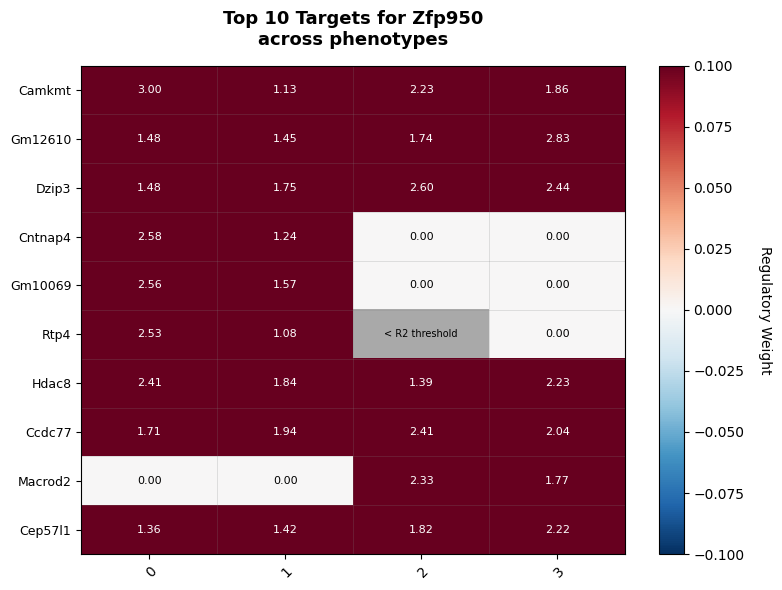
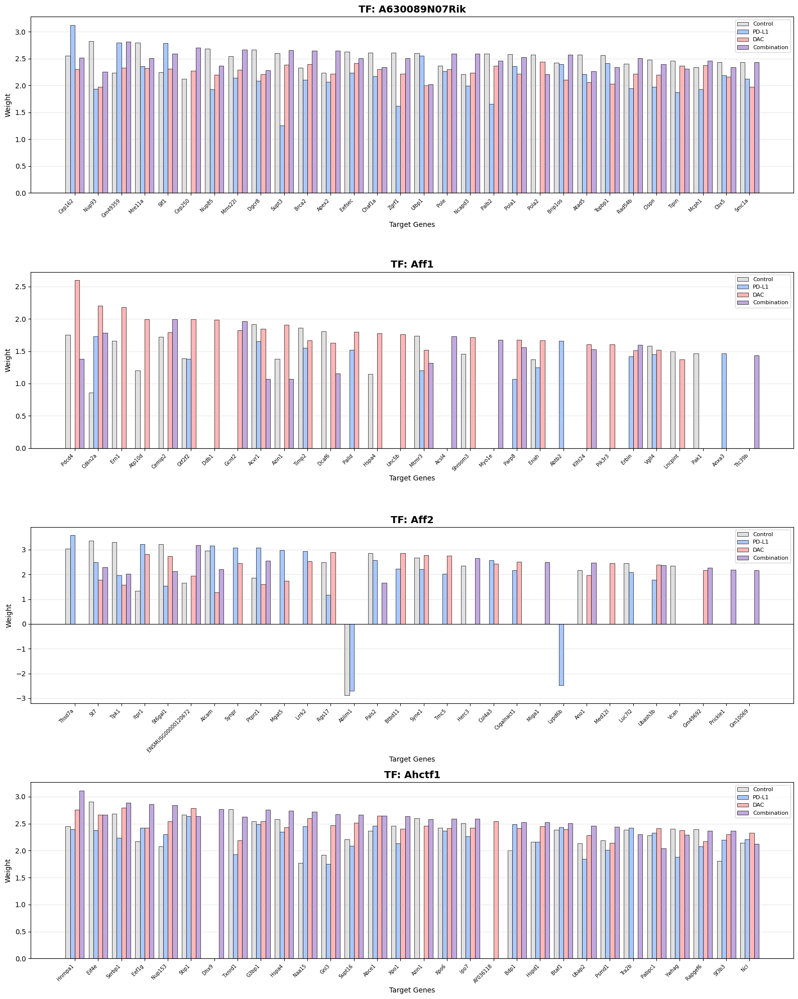
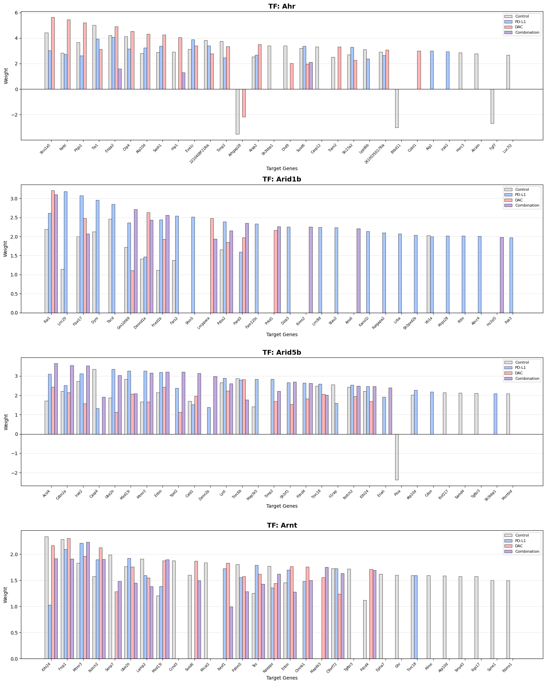
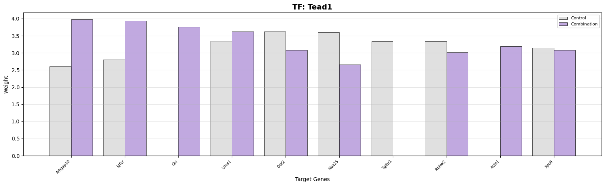
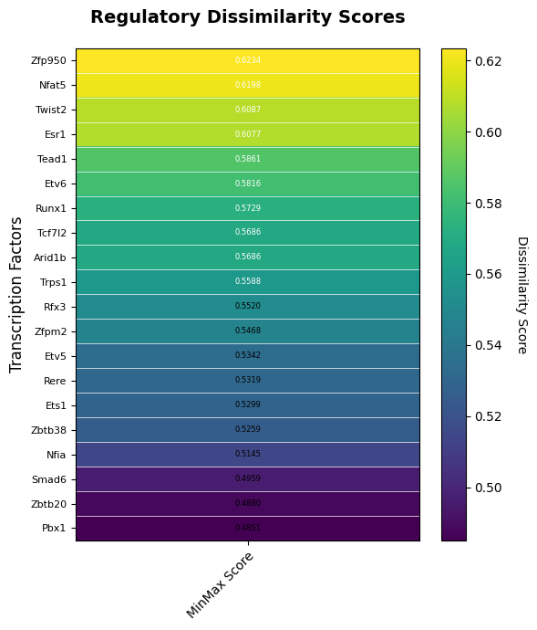
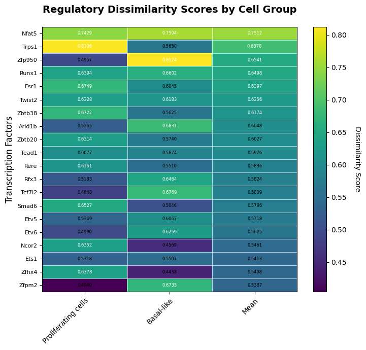
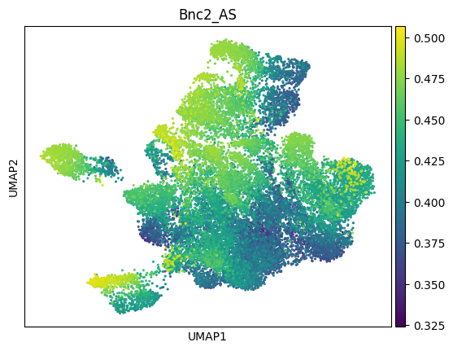
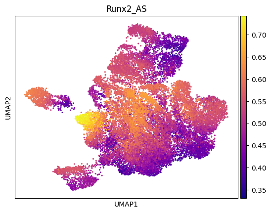

Author: Irene Marín-Goñi, PhD student - ML4BM group (CIMA University of Navarra)
This notebook provides a comprehensive guide to explore SimiCPipeline results and generate visualizations with publication-quality.
Overview
This tutorial covers: 1. Creating a visualization object from your results 2. Customizing labels for better readability 3. Weight distribution visualizations 4. AUC score distributions and comparisons 5. Dissimilarity heatmaps 6. UMAP integration with TF activity scores 7. Network-specific visualizations
For preprocessing steps, see Tutorial_SimiCPipeline_preprocessing.ipynb.
For pipeline execution, see Tutorial_SimiCPipeline_full.ipynb
Setup
The easiest way to configure your environment is to follow the README instructions using poetry (or Docker).
Required packages for this tutorial: - simicpipeline - pandas - numpy - os - pickle - anndata (for UMAP visualizations) - scanpy (for UMAP visualizations)
Create a visualization instance loading data from your completed pipeline run. - project_dir: Working directory path where input files are located and output files will be saved - run_name: Unique identifier for this analysis run (used as prefix for output files) - search: Bool for whether to automatically search for simic output files in project directory. Default: True. - lambda1: Lambda1 regularization parameter (optional) - lambda2: Lambda2 regularization parameter (optional) - label_names: Dictionary mapping labels to custom names (optional) - adata: AnnData object containing cell metadata (optional)
Warning: Figures path already exists. Existing figures may be overwritten.
# Initialize visualization objectviz = SimiCVisualization( project_dir="./SimiCExampleRun/KPB25L/Tumor", run_name="experiment_tumor", lambda1=1e-2, lambda2=1e-3, p2assignment="./SimiCExampleRun/KPB25L/Tumor/inputFiles/treatment_annotation.csv", label_names={0: 'Control', 1: 'PD-L1',2: 'DAC',3: 'Combination'}, colors={0: '#e0e0e0', 1: '#a8c8ff', 2: '#ffb6b6', 3: '#c1a9e0'})print(f"✓ Visualization object created")print(f" Project directory: {viz.project_dir}")print(f" Run name: {viz.run_name}")print(f" Figures will be saved to: {viz.figures_path}")# List available results (check in case there were typing errors)viz.available_results()viz.print_project_info(max_depth=4)
Here we can see that the distribution of adjusted R2 values across all targets. Most of them are over 0.7, indicating that the model explains a significant portion of the variance in the target gene expression. However, there are also some targets with low or negative adjusted R2 values, suggesting that the model does not fit well for those targets. This could be due to various reasons such as noise in the data, missing regulatory interactions, or complex regulatory mechanisms that are not captured by the model.
For these targets with low adjusted R2, we suggest to filter them out before plotting. For the TF-barplots we already allow this with the parameter r2_threshold. We selected a threshold of 0.7 as it was the same used to calculate the activity scores during the SimiC pipeline (See Tutorial_SimicPipeline_full.ipynb -> auc_params = { 'adj_r2_threshold': 0.7,...})
You can change this threshold as needed, but you should re-run the SimiCPipeline auc calculation with the same threshold to be consistent.
With this function you can extract the targets that do not pass the threshold
# This is an example on how to extract the list of targets that were filtered out based on the R² thresholdingunselected_targets = viz.get_unselected_targets('Ws_filtered', r2_threshold =0.7)print(unselected_targets[0][0:5])print(len(unselected_targets[0]))
As described in Tutorial_SimicPipeline_full.ipynb you can extract the network for a specific TF with the r2_threshold desired. NaNs will be displayed if the target gene has an adjusted R2 value below that threshold.
# Example of specific TF network extractiondf = viz.get_TF_network( TF_name="Zfp950", stacked =True, r2_threshold=0.7)print(df.head(10))print("\n","*"*70,"\n")print("TF network shape:")print(df.shape)
Retrieving network for TF: Zfp950
Filtered out 696 targets. 304 targets remain.
- 485 targets removed due to zero weights across all labels.
- 211 targets removed due r2 across all labels .
0 1 2 3
Camkmt 2.995173 1.127846 2.233782 1.863006
Gm12610 1.481554 1.452781 1.739482 2.827409
Dzip3 1.476733 1.754355 2.603603 2.436338
Cntnap4 2.584637 1.238455 0.000000 0.000000
Gm10069 2.557260 1.572510 0.000000 0.000000
Rtp4 2.527526 1.082883 NaN 0.000000
Hdac8 2.413334 1.843504 1.387122 2.233553
Ccdc77 1.706087 1.944424 2.407435 2.037323
Macrod2 0.000000 0.000000 2.326711 1.771953
Cep57l1 1.362048 1.422342 1.815655 2.220214
**********************************************************************
TF network shape:
(304, 4)
If you prefer we also have a heatmap option to plot TF-specific networks
======================================================================
PLOTTING TF NETWORK HEATMAP
======================================================================
Processing Zfp950...
Retrieving network for TF: Zfp950
Filtered out 696 targets. 304 targets remain.
- 485 targets removed due to zero weights across all labels.
- 211 targets removed due r2 across all labels .
Total targets for Zfp950: 304

We can plot any TF and targets that we want but to prioritize we can use the dissimilarity score across all labels to sort out a list of interesting TFs.
# Get top TFs by dissimilarity score for visualizationMinMax_all = viz.calculate_dissimilarity(verbose=True)top_tfs = MinMax_all.head(10).index.tolist()
Visualize regulatory weights for transcription factors across target genes.
# Plot TF weights for top TFsfig = viz.plot_tf_weights( tf_names = top_tfs, # TFs to plot top_n_targets=30, # Number of top targets to display ordered by mean absolute weight r2_threshold =0.7, # Only include targets with R² above this threshold grid_layout=(2,2), save =True, filename="Top_TF_weights_barplot.pdf")
If you wish to generate barplots for all your TFs set tf_namesto None. TFs will be plotted in alphabetical order.
fig = viz.plot_tf_weights( tf_names =None, # Plot all TFs top_n_targets=30, save=True, grid_layout = (4,1), # Define the grid layout (rows, columns) per pdf page r2_threshold =0.7, filename="ALL_TF_weights_barplot_grid.pdf")
======================================================================
PLOTTING TF WEIGHT BARPLOTS
======================================================================
Plotting 100 tfs...
Multi-page mode: 4x1 per page (25 pages)
Generating all tf plots...
Showing first 2 pages preview...

Showing first 2 pages preview...

✓ Saved 100 tfs to SimiCExampleRun/KPB25L/Tumor/outputSimic/figures/experiment_tumor/ALL_TF_weights_barplot_grid.pdf
Note that you can also select the labels (phenotypes) to plot.
fig = viz.plot_tf_weights( tf_names="Tead1", # TFs to plot labels = [0,3], # Specify which conditions to plot top_n_targets=10, # Number of top targets to display ordered by mean absolute weight grid_layout =None, # No grid layout, single plot r2_threshold =0.7, # Only include targets with R² above this threshold save =False)
======================================================================
PLOTTING TF WEIGHT BARPLOTS
======================================================================
Plotting 1 tfs...
Single page mode: 1 rows x 1 col
[1] Processing Tead1...

Target Gene Weight Barplots
Visualize which TFs regulate specific target genes. In this case all the TFs that regulate the target will be displayed. Similar to plot_tf_weights you can customize the grid, layout, the labels and threshold.
# Example target genes - replace with genes of interesttarget_genes = ['Kmt2e', 'Pdgfra', "Mdm2", 'Bcl2','Rad50','Rad51','Brca1','Brca2']# Plot target weightsfig = viz.plot_target_weights( target_names=target_genes, labels = [0,1,2,3], r2_threshold =0.7, # Will filter the targets if they are grid_layout =None, save=True, filename="selected_target_weights_barplot.pdf")
✓ Saved 2 TFs to SimiCExampleRun/KPB25L/Tumor/outputSimic/figures/experiment_tumor/AUC_distributions_smooth.pdf
# Unfilled line plots showing fine detailsviz.plot_auc_distributions( tf_names=top_tfs[0:2], labels=[0, 3], # Only 2 labels grid_layout=(1,2), fill=False, # Line plot only bw_adjust=0.3, # Less smooth - shows detail save=True, filename="AUC_distributions_detailed.pdf")
Visualize regulatory dissimilarity across all TFs.
# Plot dissimilarity heatmap for top TFsfig = viz.plot_dissimilarity_heatmap( labels=[0, 1, 2, 3], top_n_tfs=20, save=True, filename="dissimilarity_heatmap.pdf")print("✓ Dissimilarity heatmap created")
======================================================================
PLOTTING DISSIMILARITY HEATMAP
======================================================================
✓ Saved to SimiCExampleRun/KPB25L/Tumor/outputSimic/figures/experiment_tumor/dissimilarity_heatmap.pdf
✓ Dissimilarity heatmap created

If you want to explore the regulatory dynamics accross phenotypes in different cell groups ( Cell types, subsets) you can add the metadata info to the function plot_dissimilarity_heatmap
import pandas as pdimport numpy as npproject_dir ="./SimiCExampleRun/KPB25L/Tumor"auc_collected_file ="experiment_tumor_L1_0.01_L2_0.001_wAUC_matrices_filtered_BIC_collected.csv"cell_ids = pd.read_csv(project_dir +"/outputSimic/matrices/experiment_tumor/"+ auc_collected_file, index_col=0).index.to_list()obs_meta = pd.read_csv("./data/metadata.tsv", sep ="\t", index_col=0)obs_meta = obs_meta.loc[cell_ids] # Subset to cells in the projectobs_meta.head()
sample
treatment
cell_line
final_annotation
final_annotation_functional
nn_majority_label
nn_majority_frac
flag_misplaced
cell
01_01_28__s1
KPB25L_control
control
KPB25L
Cancer cells
Proliferating cells
Proliferating cells
1.0
False
01_01_62__s1
KPB25L_control
control
KPB25L
Cancer cells
Basal-like
Basal-like
0.9
False
01_02_38__s1
KPB25L_control
control
KPB25L
Cancer cells
Basal-like
Basal-like
1.0
False
01_02_54__s1
KPB25L_control
control
KPB25L
Cancer cells
Proliferating cells
Proliferating cells
1.0
False
01_02_81__s1
KPB25L_control
control
KPB25L
Cancer cells
Basal-like
Basal-like
1.0
False
# Generate a dictionary with the cell groupings based on the metadata column of interestcell_groups = {}grouping_column ='final_annotation_functional'for group in obs_meta[grouping_column].unique():print(group) cell_groups[group] = obs_meta[obs_meta[grouping_column] == group].index.tolist()
Proliferating cells
Basal-like
fig = viz.plot_dissimilarity_heatmap( labels=[0, 1, 2 , 3], cell_groups=cell_groups, # Add cell groupings to the heatmap top_n_tfs=20, sort_by ="mean_score", # Can be "mean_score" or any group in cell groups save=True, filename="dissimilarity_heatmap2.pdf")
======================================================================
PLOTTING DISSIMILARITY HEATMAP
======================================================================
✓ Saved to SimiCExampleRun/KPB25L/Tumor/outputSimic/figures/experiment_tumor/dissimilarity_heatmap2.pdf

Step 5: Summary Statistics Visualization
Create a comprehensive overview of AUC score distributions.
If you have an AnnData object with UMAP coordinates, you can visualize single cell TF activity on the embeddings using the viz.get_TF_auc() to extract selected TF activity scores in a pd.DataFrame format (see example below).
Alternatively, if you are more confortable with Seurat/SingleCellExperiment (R world) you can easily incorporate these activity scores in the metadata.
A complete matrix for all TFs was automatically saved in when you run SimiCPipeline.
import scanpy as scimport pandas as pdimport simicpipeline# Load your AnnData objectadata = simicpipeline.load_from_anndata('./data/DAC_aPDL1_seurat_annotated.h5ad')adata_subset = adata.copy()adata_subset = adata_subset[adata_subset.obs["final_annotation_functional"].isin(['Proliferating cells','Basal-like'])].copy()adata_subset = adata_subset[adata_subset.obs["cellLine"] =="KPB25L"].copy()print(adata_subset)# Step 1. Extract auc scores for specific TFstf_names = ["Bnc2", "Runx2"]activity_scores = viz.get_TF_auc(TF_name= tf_names, stacked=True)col_names = [tf +"_AS"for tf in tf_names]non_tf_cols = activity_scores.columns.difference(tf_names) col_names.extend(list(non_tf_cols))activity_scores.columns = col_names# print(activity_scores.head())# Step 2: Check if all indices in activity_scores are in adata.obsmissing_indices = activity_scores.index.difference(adata.obs.index)iflen(missing_indices) >0:print(f"Warning: {len(missing_indices)} indices in activity_scores are NOT in adata.obs")print("Missing indices:", missing_indices.tolist())else:print("✓ All indices in activity_scores are found in adata.obs")# Step 3: Add activity scores to AnnData object metadata# Ensure the indices of `activity_scores` match the `adata.obs` indexadata_subset.obs = adata_subset.obs.join(activity_scores)adata_subset.obs
Run these steps from the scanpytutorial or use your processed object.
# Normalizing to median total countssc.pp.normalize_total(adata_subset)# Logarithmize the datasc.pp.log1p(adata_subset)sc.pp.highly_variable_genes(adata_subset, n_top_genes=2000, batch_key="sample")sc.tl.pca(adata_subset)sc.pp.neighbors(adata_subset, use_rep='X_pca', n_neighbors=15)sc.tl.umap(adata_subset)
# Plot UMAP for Bnc2 activity scoressc.pl.umap(adata_subset, color="Bnc2_AS", cmap="viridis", size=20)# Plot UMAP for Runx2 activity scoressc.pl.umap(adata_subset, color="Runx2_AS", cmap="plasma", size=20)


Step 8: Export Results
You can easily save all the visualizations generated with the argument save= True and customize the name with filename. Furthermore, all plotting functions return a matplotlib.pyplot figure so you can manually save it.
Additional functionalities
Customize Label Names
You can access and change the labels and colors after initialization with the function set_label_names()
Point the visualization to your pipeline results files. This is useful if you have old SImiC runs and want to take advantage of the visualization funcitonality.
viz2 = SimiCVisualization( project_dir="./SimiCExampleRun/KPB25L/Tumor", run_name="experiment_tumor", search =False, lambda1=0.1, lambda2=0.01, p2assignment="./SimiCExampleRun/KPB25L/Tumor/inputFiles/treatment_annotation.cav", label_names={0: 'Control', 1: 'PD-L1',2: 'DAC',3: 'Combination'}, colors={0: '#e0e0e0', 1: '#a8c8ff', 2: '#ffb6b6', 3: '#c1a9e0'})out_dir = viz2.project_dir /"outputSimic/matrices/"/ viz2.run_name# If you're continuing from a previous run, set the pathsviz2.set_paths_custom( force =True, p2df=viz2.project_dir /"inputFiles/expression_matrix.pickle", p2assignment=viz2.project_dir /"inputFiles/treatment_annotation.cav", p2tf=viz2.project_dir /"inputFiles/TF_list.csv", p2simic_matrices= out_dir /"experiment_tumor_L1_0.1_L2_0.01_simic_matrices.pickle", p2filtered_matrices = out_dir /"experiment_tumor_L1_0.1_L2_0.01_simic_matrices_filtered_BIC.pickle", p2auc_raw= out_dir /"experiment_tumor_L1_0.1_L2_0.01_wAUC_matrices.pickle", p2auc_filtered= out_dir /"experiment_tumor_L1_0.1_L2_0.01_wAUC_matrices_filtered_BIC.pickle")
Warning: Figures path already exists. Existing figures may be overwritten.
Warning: No data found to determine labels.
======================================================================
SETTING CUSTOM PATHS
======================================================================
✓ Custom paths successfully set.
======================================================================
✓ Creating visualization objects from SimiCPipeline results
✓ Customizing label names for clarity and colors
✓ Weight distribution visualizations (R², TF weights, target weights)
✓ TF-specific network visualization
✓ AUC score distributions with multiple visualization styles
✓ Dissimilarity analysis across phenotypes and cell types
✓ Summary statistics and comprehensive overviews
✓ Optional UMAP visualization
Generate a printed summary of all created visualizations.
# List all generated figuresfigure_files =sorted(viz.figures_path.glob('*.pdf'))print("\n"+"="*70)print("VISUALIZATION SUMMARY")print("="*70)print(f"\nGenerated {len(figure_files)} visualization files:")print(f"\nSaved to: {viz.figures_path}\n")for i, fig_file inenumerate(figure_files, 1):print(f"{i}. {fig_file.name}")print("\n"+"="*70)